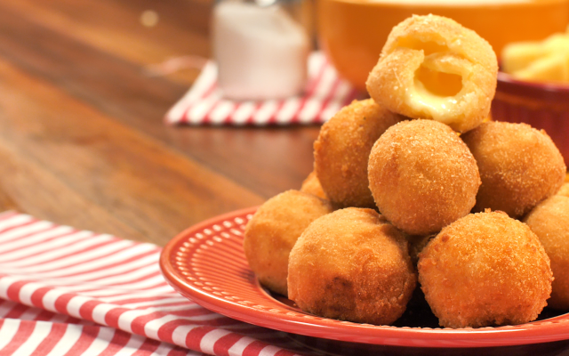

1 Em uma panela, adicione o leite, a farinha de trigo, a margarina, a gema e o sal uma panela
2 Leve ao fogo e mexa com um garfo até que a massa solte da panela, depois deixe esfriar
3 Modele a massa em bolinhas e recheie com o queijo, depois passe o bolinho na gema de ovo e na farinha de rosca
4 Em uma panela, adicione o óleo, depois de quente adicione as bolinhas e frite-as

Volte a pagina inicial